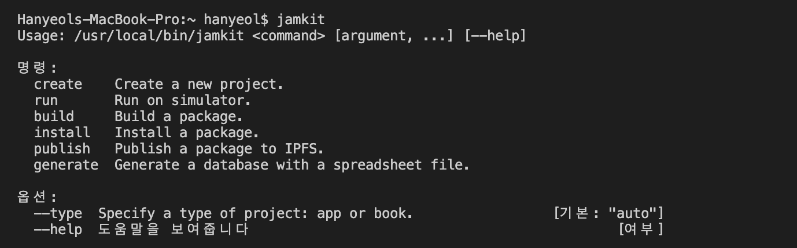

Jamkit 명령어 도구
Jamkit CLI
Jamkit은 커맨드라인 도구를 제공합니다

jamkit 명령으로 앱 생성/실행/빌드/설치/배포 등의 작업을 수행할 수 있습니다.
Create
create는 프로젝트를 생성하는 명령어입니다.
기본 명령어
jamkit create {프로젝트명}
// HelloWorld 템플릿이 생성
옵션
--template: 다른 템플릿으로 앱을 생성하려는 경우
jamkit create --template=XXX
Run
run은 기기나 에뮬레이터에서 앱을 실행하는 명령어입니다.
기본 명령어
jamkit run
옵션
--platform=android: macOS에서 실행할 경우
jamkit run --platform=android
--skip-sync: 파일을 기기나 에뮬레이터로 복사하지 않고 바로 실행
jamkit run --skip-sync
--mode=jam: 슈퍼앱이 실행 중인 상태에 미니앱 실행
jamkit run --mode=jam
Build
build는 앱 패키지를 생성하는 명령어입니다.
기본 명령어
jamkit build
옵션
Install
install은 앱 패키지를 기기에 설치하는 명령어입니다.
기본 명령
jamkit install
옵션
Publish
publish는 앱 패키지를 IPFS에 업로드하여 공유할 수 있게 해주는 명령어입니다.
기본 명령어
jamkit publish
옵션
Generate
generate는 MS 엑셀 파일에서 데이터베이스를 생성하는 명령어입니다.
기본 명령어
jamkit generate {엑셀 파일명}
옵션